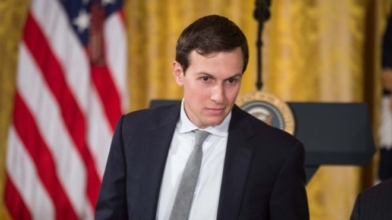

Monday, 27 March
Trump son-in-law faces Russia questions

President Donald Trump's son-in-law and aide, Jared Kushner, will be questioned by a US committee investigating alleged ties between the Trump team and Moscow.
Mr Kushner has volunteered to speak to the Senate Intelligence Committee, the White House said.
It is examining Russia's alleged interference in last year's election.
The US intelligence community believes alleged Russian hacking during the presidential election was done to help Mr Trump defeat Hillary Clinton.
Russia has denied the allegations and President Trump has branded the story "fake news".
There are two congressional investigations into the issue, plus an FBI one.
During the presidential transition process and through the first few months of the Trump administration, presidential son-in-law Jared Kushner has been, in effect, a one-man Department of State.
He has been tasked with brokering Middle East peace, soothing Mexican and Canadian officials as Nafta is reopened for negotiation and handling Chinese diplomats puzzled by the new Washington regime.
As tense as all these situations have been and will be going forward for the 36-year-old real-estate developer, it's Mr Kushner's dealings with Russian officials that may put him in the sharpest spotlight. The Russian story, given congressional inquiries and the ongoing FBI investigation, has the potential to be a ticking bomb within the Trump White House.
When Mr Kushner sits down with committee investigators he will, in effect, be speaking for the president - and his words could go a long way toward assuaging concerns or bringing the controversy one step closer to the president himself.
The meeting will likely be cordial for now. If Mr Kushner is at some point called to publicly testify before a congressional committee on the matter, things could get heated very quickly.
The first was with Russian Ambassador Sergei Kislyak at Trump Tower in New York in December. The second was with the head of Russia's state-owned development bank.
White House staff told the New York Times nothing significant was discussed and members of the president-elect's team routinely met Russians and other foreign delegations.
Meanwhile, Mr Kushner has been picked to lead a new White House team that aims to overhaul government bureaucracy.
It will have sweeping powers to reform procedures, with technology and data a key area and the help of Apple CEO Tim Cook and Microsoft founder Bill Gates reportedly enlisted.
Mr Kushner, 36, told the newspaper the "government should be run like a great American company".
He is a property investor and media executive who is married to Mr Trump's daughter Ivanka.
He already advises the president on foreign relations, and is said to have been influential in helping President Trump choose staff for his campaign and in government.

 Sign in
Sign in